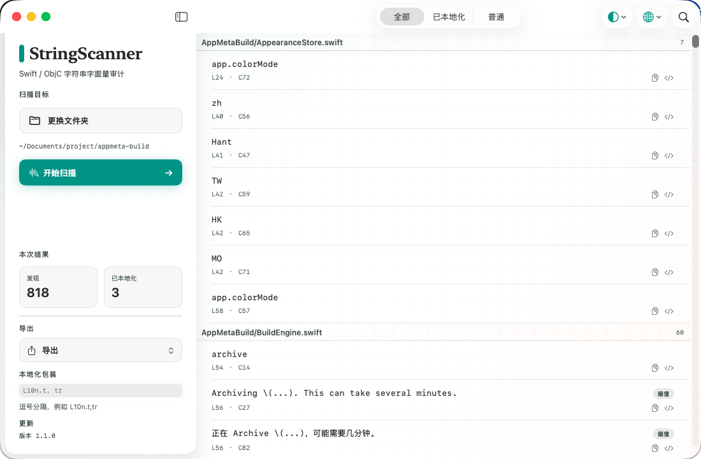

产品截图
侧栏扫描，按文件审字面量
导出、筛选、主题与语言都在同一窗口里，不靠运行时截图猜漏翻。
能力
在源码里找字符串
-
01
Swift 与 Objective-C
覆盖 .swift / .m / .h，识别 NSLocalizedString、String(localized:)、Text 等常见写法。
-
02
GUI 与 CLI 同一套引擎
侧栏一键扫描、筛选、导出；命令行进脚本与 CI。
-
03
直接进 Xcode
导出 .xcstrings / .strings，也可 JSON、CSV，并支持自定义本地化包装。
下载
装上就能扫
v1.1.0 · build 722d038 · Apple Silicon。若被拦截，右键「打开」，或执行下方 quarantine 命令。
xattr -dr com.apple.quarantine ~/Downloads/StringScanner.app命令行
三分钟上手
解压、赋权，直接扫整个工程目录。
# install
chmod +x stringscanner-cli
sudo mv stringscanner-cli /usr/local/bin/
# scan
stringscanner-cli ~/Projects/MyApp
# export String Catalog
stringscanner-cli ~/Projects/MyApp --export-xcstrings ./Localizable.xcstrings